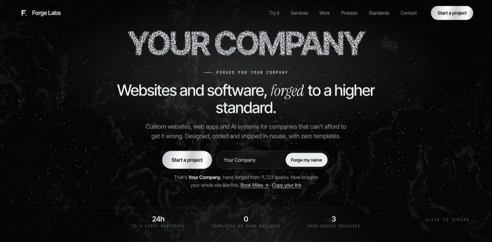

Live · try it
01 / Studio · WebGL
Forge Labs, my studio site
Type any company name and about 11,000 sparks forge it in real time. Click anywhere to strike the anvil. It also has Forge It, a built-in mockup generator: describe a business in one sentence and it designs a full site preview with its own layout, colors, photos and sections.